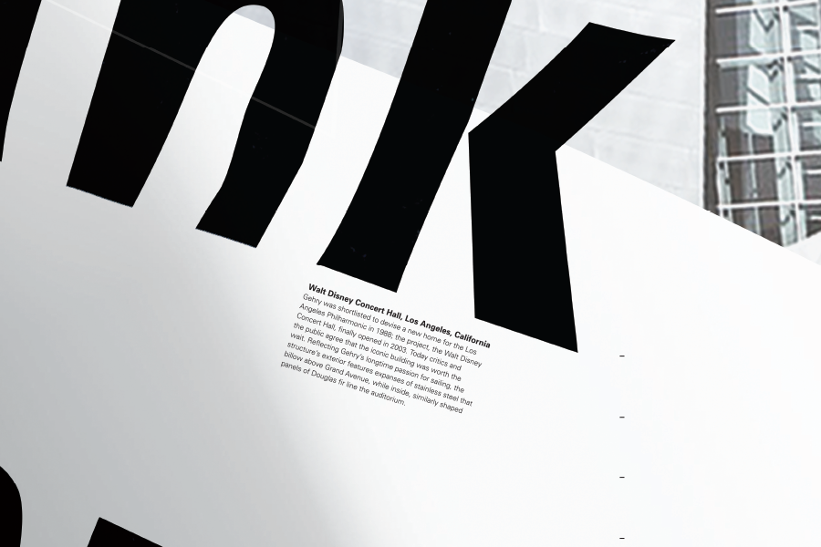
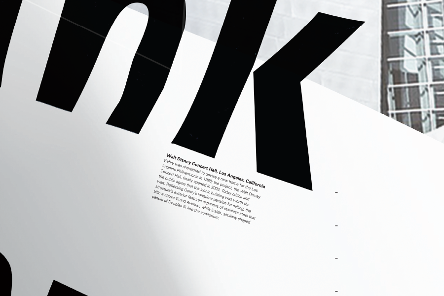

Frank Gehry - Conceptual Poster Design
Frank Gehry is among the most acclaimed architects of the 20th century, and is known for his use of bold, postmodern shapes and unusual fabrications. Gehry's most famous designs include the Walt Disney Concert Hall—which I was mainly inspired by— in Lost Angeles and the Guggenheim Museum in Bilbao, Spain. Particularly, I was inspired by his curvy shapes and depth on facades, so I experimented with papers and types to create natural depth for the title. In the meantime, the content forms structures and hiearchy.
Conceptualization / Sketch / Image Making / Photoshop / Illustrator / Indesign
Disney Concert Hall Designed by Frank Gehry Photographed by Carol Highsmith

 
